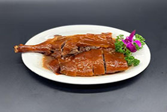
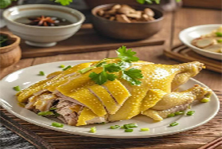
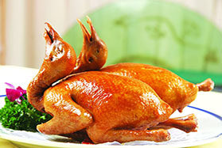
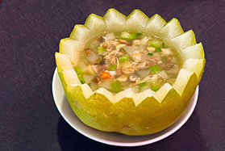
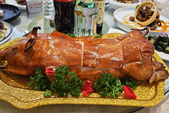
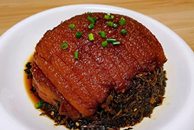
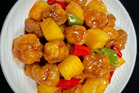
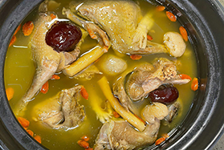
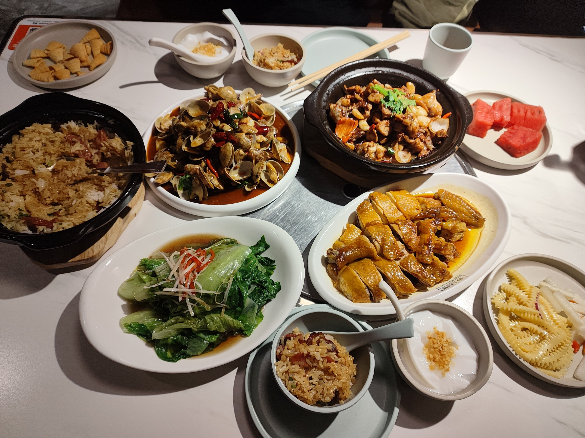

- 
- 
- 
- 
- 
- 
- 
- 

粤菜简介

中国八大菜系之粤菜
风味特点： 清鲜爽嫩，兼容并蓄，复合调味，季节性强
烹调方法： 以清蒸、白灼、猛火快炒、慢炖等技艺为主
起源时间：
- **秦汉时期**：岭南饮食文化初现，以渔猎和稻作为主。
- **唐宋发展**：海上丝绸之路促进食材与烹饪技术交流（如引入南洋香料）。
- **明清成熟**：广州成为通商口岸，粤菜体系成型，并吸收西洋技法。
- **近现代**：香港、澳门推动粤菜国际化，创新出“新派粤菜”。
主要食材： 海鲜河鲜、特色辅料、野味等特产
主要菜式： 广府菜、潮州菜、客家菜、等
主要名宴： 满汉全席（广府版）、潮州四席、顺德鱼宴、盆菜宴（客家）等
了解更多
肉质细嫩多汁，搭配酸梅酱解腻，网友形容“一口入魂”“肥而不腻，香中带甜
南荣
强调原汁原味，“皮爽肉滑，骨头入味”，蘸姜葱酱提鲜，老广称“无鸡不成宴”
violet
外皮“红润酥脆如玻璃”，肉质“细腻浓香”，被赞“外酥里嫩，一口入魂”。成都网友甚至认为其“比传统乳鸽更胜一筹”。
马楚
早茶“四大天王”之一，网友形容“外皮晶莹剔透，虾仁饱满弹牙”“一口咬下全是鲜甜”。
赖旺财